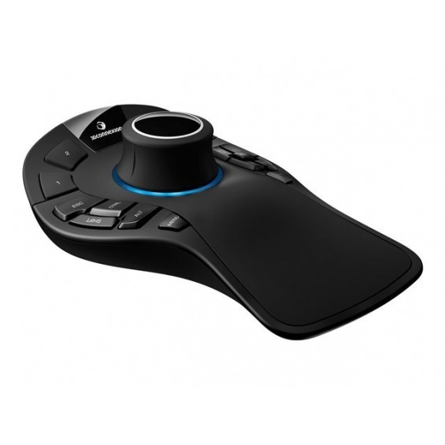
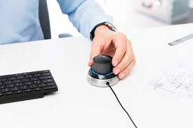

¿Que es?
Un ratón tridimensional es una variante del ratón tradicional bidimensional diseñado para permitir al usuario mover el cursor en tres dimensiones dentro de una aplicación. El diseño real de un mouse 3D varía según el fabricante, y algunos modelos son simplemente ratones 2D con botones adicionales colocados en el dispositivo para permitir que el mouse cambie el eje que controla cuando se presiona. Otro tipo de ratón 3D se utiliza colocando el dispositivo en el aire y moviéndolo y girándolo como si fuera un modelo 3D o una cámara en la aplicación que estés usando. Uno de los problemas que se pueden encontrar al usar un mouse 3D son los problemas de resolución, donde el movimiento del mouse en relación con el cursor en la aplicación no está coordinado y es difícil de controlar. En la mayoría de los casos, un mouse 3D se usa para diseñar y manipular objetos 3D en programas de modelado, ingeniería o visualización científica. El problema que intenta resolver un ratón 3D es la manipulación en un entorno virtual 3D. Tradicionalmente, esto se hace mediante una combinación de pulsaciones de teclas y movimientos normales del mouse. Esto puede ser engorroso y llevar mucho tiempo, y los diseñadores a veces necesitanrotar constantemente la vista del modelo para acceder a ciertas caras o abrir varias ventanas separadas a la vezpara trabajar de manera eficiente.
Ventajas
Ventajas
Combinación natural de manos: usando ambas manos al mismo tiempo, puede realizar movimientos y comandos al mismo tiempo y evitar el tiempo de inactividad. Puede aumentar la productividad en un 21%. Combinación de mano de ratón 3D Más conveniente: cuente más de 5000 clics por día usando un mouse tradicional. El uso de ratones 3D reduce el riesgo de enfermedades laborales, ya que los clics y los movimientos del ratón suelen reducirse en un 50 %, y la fatiga se reduce al redistribuir la carga de trabajo entre las manos. Mejor calidad de diseño: el uso de un mouse 3D brinda a los diseñadores la sensación de tener un modelo 3D en sus manos, lo que permite unmejor diseño y una mejor evaluación y revisión de los resultados. De acuerdo con el "Retorno económico al mouse 3D para usuarios de CAD", más del 84 % de los diseñadores de CAD ven mejoras en sus diseños y la capacidad de identificar errores al usar un mouse 3D. Fácil de usar.
Usos mas comunes
Los ratones 3D funcionan de diferentes maneras, pero dos son los más utilizados. En primer lugar, cualquier mecanismo que utilice un ratón para proporcionarlibertad de movimiento activa una serie de macros 2Dde ratón y teclado en el programa 3D utilizado. En este caso, el mouse es una forma conveniente de activar la rotación normal, la selección y otros movimientos sin múltiples pulsaciones de teclas o acciones diferentes. Tiene la ventaja de trabajar con casi cualquier programa existente, ya que proporciona solo la funcionalidad existente. Otro enfoque disponible es agregar un mouse 3D dedicado y mover funciones directamente a aplicaciones 3D para manipular objetos de formas únicas usando un teclado y un mouse 2D. Esto puede mejorar en gran medida la eficiencia del trabajo con aplicaciones 3D. La desventaja es que la aplicación debe admitir complementos avanzados o poder integrar los gestos del mouse en el programa. En la práctica, un mouse 3D puede aparecer como una pelota en una plataforma, un disco cilíndrico, un mouse estándar con varios botones o incluso un bolígrafo conectado a un brazo robótico. Una rata atrapada que se mueve por el aire puede parecer una varita mágica o una forma curva de boomerang. El diseño único coloca la mayor parte de los circuitos del mouse en un anillo que se usa en una mano, con una pequeña fila de botones en la muñeca que permiten a los usuarios manipular objetos con gestos con las manos.